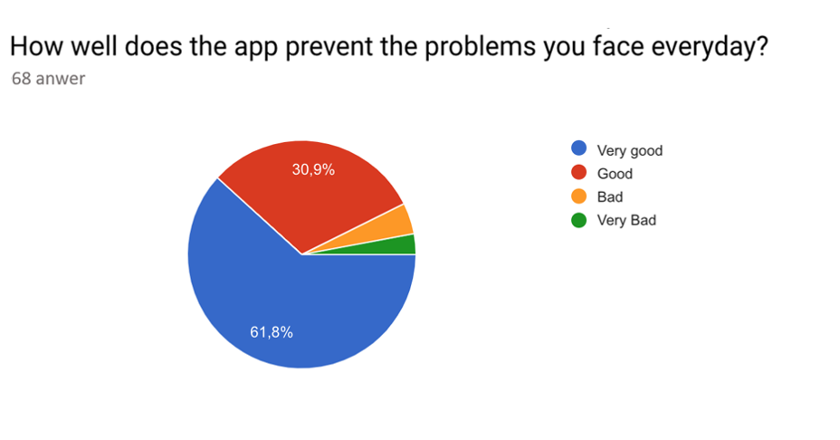

I hope the communication wall between the deaf and the non-deaf will disappear

Imagine being deaf and taking a tour at your local Hospital in your city. You’re being taken care of by a newly trained nurse. This nurse cannot use sign language. What will you do? Find paper and pen? Or would you base the communication on notebook on your mobile? This will take much time and is not very effective either. Hearing people are often afraid to say something wrong which will upset deaf people while communicating. In other words, there are communication difficulties between those who can hear, and those who cannot. What if the communication wall between them disappears? What if communication between then, could be digitized? We all meet different challenges in our everyday lives, whether you are alone, or among people. One who faces several challenges, is a group of deaf people. Challenges are because there are insufficient funds that can safeguard the interest/safety to deaf people to feel comfortable enough to communicate with people who are not hearing impaired. In other words, the problem is the communication between deaf and non-deaf people.
The members of society affected by this problem, are hearing impaired people. It is first and foremost those who need to communicate with each other and that will be influenced by a possible solution. Families with deaf members, are also a part of our target group.
Others who encounter the problem, are hospitals that may have hearing impaired patients. Communicating with hearing impaired patients can be difficult. Our vison is that the current and future generation will gain easier growth through this technology. We have been informed by teachers at Nydalen school (school for deaf and hearing people) that sign language is not an international sign language. Therefore, we will only focus on Norwegian sign language for now. But we will think of further developing the solution to several countries.
We have done a survey at a local high school in Oslo, Nydalen vgs. The survey was taken by students who study there, and some member of Hørselshemmedes Landsforbund. They were asked questions about where they face the communication problems:
The problem we have presented is a social problem. When we say social, we think that there are difficulties in the relationship between individuals and society.
In other words, there is difficulty when it comes to communication between the hearing and deaf people.
In some situations where we seek help/assistance when needed, can deaf people feel that they are left to themselves. To indicate what a deaf person is trying to say, can be challenging to most of us. For that reason, they are bound to interpret themselves in most situations where they are in contact with "hearing people." Hiring an interpreter can be an efficient way to form a communication with a deaf person but might not be an accurate way to hold the quality assurance. since majority of us that don’t know any sign language, we would prefer to form a communication based on note – writing. It might not be the most efficient strategy, but it will lead us closer to our goal which is to understand and accommodate our patient.
Based on the survey we have done, we found that those who can hear, might be afraid to talk to a deaf person. The reason behind this is that they are afraid to say something wrong or do something that can offend the deaf person. The hearing impaired were asked how relevant they think this problem is, and 75% thinks that it is very relevant.
Another reason for why this is a relevant problem, is the social differences between deaf and hearing people. Both often sit by themselves at schools, meeting etc. They are not very socialized with each other. According to the survey, the deaf do not have many friends who can hear, and hearing people don’t have many deaf friends.